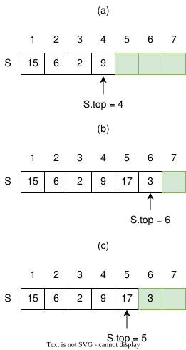
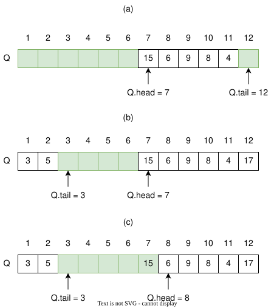

Stacks and Queues
This section discusses two data structures: stacks and queues. Both are based on the array data structure, but unlike conventional arrays, they impose restrictions on how elements are inserted, deleted, and accessed.
Stacks and queues are dynamic arrays in which the element removed from the array by the delete operation is predetermined. In a stack, the element deleted from the array is the one most recently inserted. The stack implements a last-in, first-out, or LIFO policy. Similarly, in a queue, the element deleted is always the one that has been in the array for the longest time. The queue implements a first-in, first-out, or FIFO policy. There are several ways to implement stacks and queues on a computer. This chapter will use a simple array to implement each.
Stacks
Stacks are implemented using arrays; however, there are a few constraints:
- Elements are inserted only at the end of a stack, also called the push operation.
- Elements are deleted only from the end of a stack, also called the pop operation.
- Reading operations are executed from the end of a stack.
Think of a stack as a pile of plates, where adding and removing plates from the pile occurs at the top of the stack.
The insert operation on a stack is often called PUSH, and the delete operation, which does not take an element argument, is often called POP.
Programming languages don't necessarily have stack data types, but stacks can be built using the array data type. A stack is an example of an abstract data type.
Abstract data type — a kind of data structure defined by a set of theoretical rules that can be implemented using other built-in data structures.
The following table shows the operations that can be performed on a stack.
| Operation | Description |
|---|---|
push() |
Adds an element to the top of the stack |
pop() |
Removes an element from the top of the stack |
peek() |
Returns a copy of the element on the top of the stack without removing it |
is_empty() |
Checks whether a stack is empty |
is_full() |
Checks whether a stack is at maximum capacity when stored in a static (fixed-size) structure |
The following figure shows that we can implement a stack of at most \(n\) elements with an array \(S[1..n]\). The array has an attribute \(S.top\) that indexes the most recently inserted element. The stack consists of \(S[1..S.top]\), where \(S[1]\) is the element at the bottom of the stack and \(S[S.top]\) is the element at the top.
When \(S.top=0\), the stack contains no elements and is empty. We can test whether the stack is empty using the
STACK-EMPTY operation or by calling an is_empty() function. If we attempt to pop an empty stack, we say the stack *
underflows*. If \(S.top\) exceeds \(n\), the stack overflows.

The following is the pseudocode implementation of a stack, without stack overflow checking.
STACK-EMPTY(S)
if S.top == 0
return TRUE
else
return FALSE
PUSH(S, x)
S.top = S.top + 1
S[S.top] = x
POP(S)
if STACK-EMPTY(S)
error "underflow"
else
S.top = S.top - 1
return S[S.top + 1]
The three stack operations take \(O(1)\) time.
Queues
In queues, we call the insert operation enqueue and the delete operation dequeue. Similar to the POP operation in a stack, dequeue takes no element argument. The FIFO property of a queue causes it to operate like a line of customers waiting to pay a cashier.
The queue has a head and a tail. When an element is enqueued, it takes its place at the tail of the queue, just as a newly arriving customer takes a place at the end of the line. The element dequeued is always the one at the head of the queue, like the customer at the head of the line who has waited the longest.
The following figure shows one way to implement a queue of at most \(n-1\) elements using an array \(Q[1..n]\). The queue has an attribute \(Q.head\) that indexes, or points to, its head. The attribute \(Q.tail\) indexes the next location at which a newly arriving element will be inserted into the queue.
The elements in the queue reside in locations \(Q.head, Q.head+1, \ldots, Q.tail-1\), where we "wrap around" in the sense that location 1 immediately follows location \(n\) in a circular order. When \(Q.head = Q.tail\), the queue is empty. Initially, we have \(Q.head = Q.tail = 1\).
If we attempt to dequeue an element from an empty queue, the queue underflows. When \(Q.head = Q.tail + 1\), or both \(Q.head = 1\) and \(Q.tail = Q.length\), the queue is full. If we attempt to enqueue an element into a full queue, the queue overflows.

In our procedures ENQUEUE and DEQUEUE, we have omitted error checking for underflow and overflow. The pseudocode
assumes that \(n = Q.length\).
ENQUEUE(Q, x)
Q[Q.tail] = x
if Q.tail == Q.length
Q.tail = 1
else
Q.tail = Q.tail + 1
DEQUEUE(Q)
x = Q[Q.head]
if Q.head == Q.length
Q.head = 1
else
Q.head = Q.head + 1
return x
The two queue operations take \(O(1)\) time.
Conclusion
Stacks are ideal for processing data in LIFO order. Applications of stacks, such as the "undo" function in a word processor and checking errors such as missing parentheses in code, are a few examples.
Queues process requests based on FIFO order. Queue data structures are implemented in print servers and for handling hardware or real-time system interrupts, among other applications. In this chapter, only basic queues are discussed.